由 .cosmocode/docs/产品说明.md 生成 · 2026-10-20
一款移动端优先的本地智能图片管家：导入照片后自动分相册、给出可解释的清理建议、用带背景音乐的幻灯片重新浏览，并可按需开启云端模型增强。
本文档面向产品与设计评审，逐场景说明界面、功能与交互，并附全部界面截图。截图来自内置「演示相册」（13 张程序化生成的照片，覆盖 7 个相册、1 组重复、1 组相似、3 张画质问题照片），因此无需准备素材即可复现本文所有结果。
手机相册的典型困境是照片越攒越多、找不到、不敢删。Luma 拾光把这三件事拆成三个明确动作：自动归类让照片各归其位，清理建议让删除有据可依，沉浸幻灯片让回看重新变得愉快。
所有默认能力都在浏览器内完成，照片与派生数据保存在本机 IndexedDB，原图不会离开设备。云端模型增强作为可选项存在，默认关闭，且开启后也只上传长边 640px 的压缩样张。
| 用户 | 场景 | 期望结果 |
|---|---|---|
| 手机照片堆积的用户 | 攒了几千张没整理 | 打开即按人物、风景、美食、夜景等自动分好 |
| 想清理又不敢删的用户 | 空间告急，不知道删哪些 | 给出重复、相似、模糊、曝光、低分辨率的具体清单与理由 |
| 有整理癖好的用户 | 想手动纠正归类 | 一张照片可同时归入多个相册，且手动结果优先于自动结果 |
| 爱回看的用户 | 睡前、通勤时翻旧照片 | 全屏幻灯片、随机播放、内置背景音乐 |
| 注重隐私的用户 | 不愿上传照片到云端 | 本地链路完整可用，云端开关由自己决定 |
底部四个标签构成主干：图库 / 相册 / 清理 / 幻灯片，中间的上传按钮随时可用。照片详情、相册归类、云端增强、删除确认以底部弹层呈现，保证单手可达。
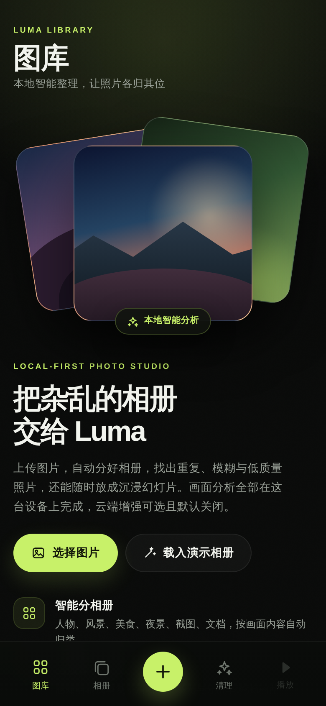
空状态即引导页：顶部是程序化绘制的品牌插画，中部给出定位说明与功能亮点（本地分析、自动分相册、清理建议、幻灯片），底部说明隐私承诺并提供「载入演示相册」入口。右上角常驻云朵图标，是云端增强的入口。
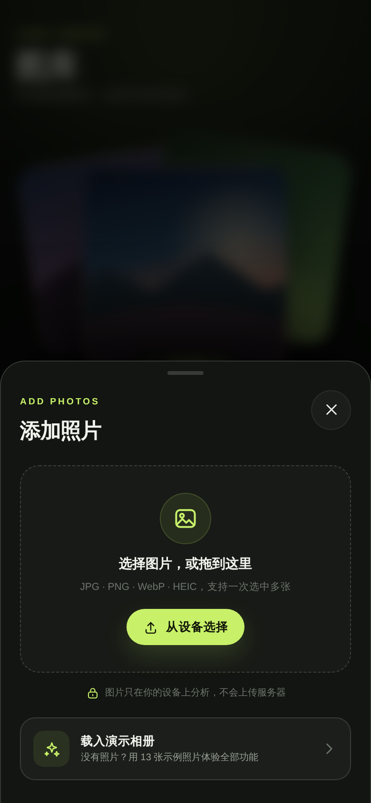
点击底部加号打开导入面板。支持点击选择与拖拽投递两种方式，格式覆盖 JPG、PNG、WebP、HEIC，可一次选中多张。面板底部固定隐私说明，并保留「载入演示相册」入口，方便随时用演示数据体验。
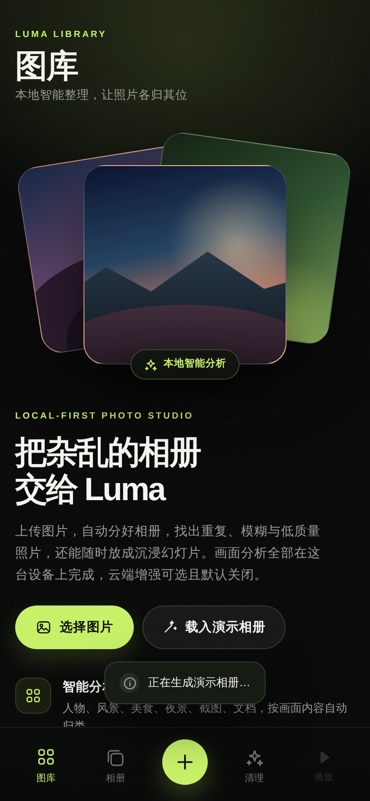
导入后立即开始分析，底部浮出进度条并显示已完成张数（智能分析中 n/13）。分析在 Web Worker 中执行，主线程保持可交互，因此进度条出现的同时仍可继续操作。演示相册 13 张照片的完整分析耗时约 4.5 秒。
每张照片会产出 16x16 差异哈希、8x8x3 分块颜色指纹，以及亮度、对比度、饱和度、清晰度、边缘密度、色彩分布、肤色占比、暗部占比、天空占比等指标，这些指标同时服务于归类、画质评分与问题检测。
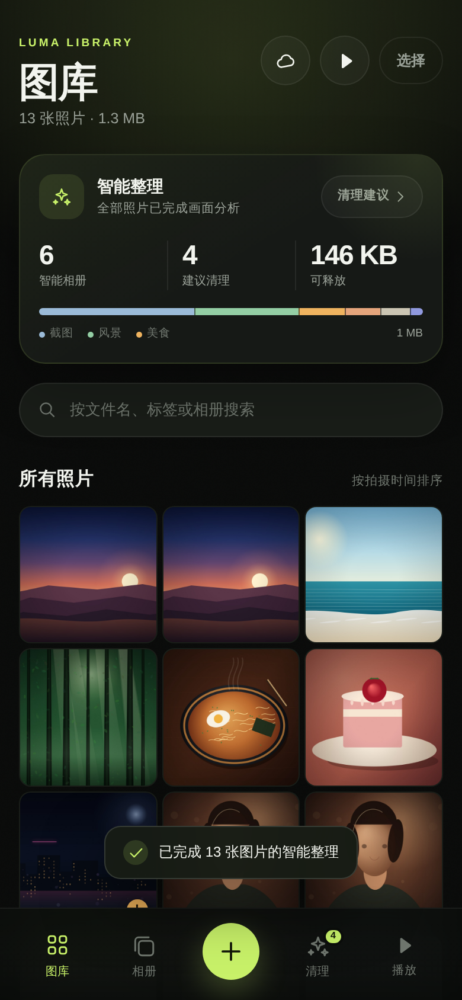
图库以时间倒序的网格展示全部照片。页头汇总照片数量与容量占用（本例 13 张照片 · 1.3 MB），并提供云端增强、播放全部、批量选择三个入口。
网格上方是「智能整理」卡片，一行给出核心结论：6 个智能相册 · 4 条建议清理 · 可释放 146 KB，并显示分析状态（全部照片已完成画面分析）与清理建议入口。卡片下方继续展开相册分布与画质分布，把分析结果直接摊开给用户看。
每张缩略图角标显示所属相册与画质分，便于快速扫读。
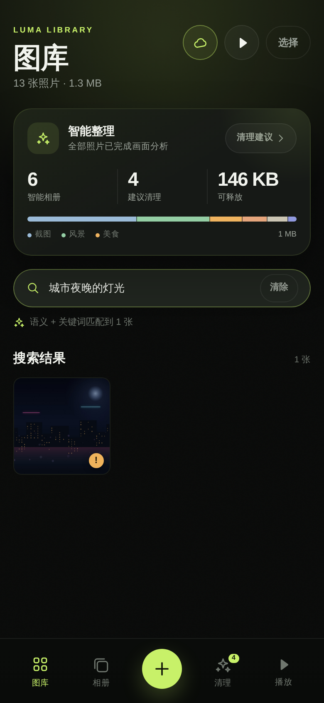
搜索框支持自然语言描述。示例中「城市夜晚的灯光」精准命中了城市夜景一张，提示条显示「语义 + 关键词匹配到 1 张」，说明本次结果来自云端语义与关键词的融合。
检索链路分三层：向量相似度决定哪些照片进入候选，重排模型决定候选顺序，本地词法命中作为兜底。云端不可用时自动退化为纯关键词检索，功能不中断。
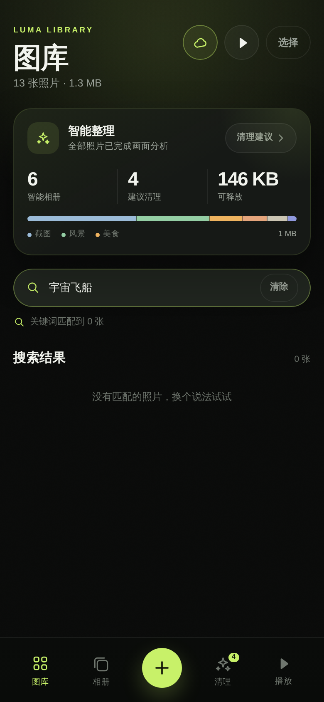
「宇宙飞船」这类与图库毫无关联的查询返回 0 张，并给出「没有匹配的照片，换个说法试试」的引导。这里刻意不做「退而求其次」的全量返回，避免用户误以为全部照片都相关。
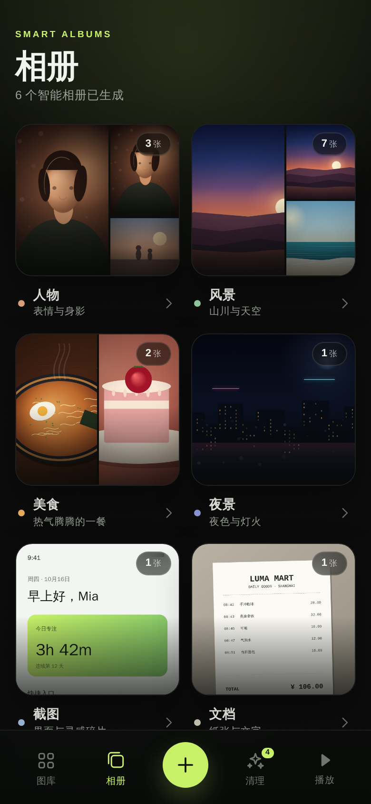
相册页展示 7 个自动相册（人物、风景、美食、夜景、截图、文档、日常）及各自的数量与封面拼贴：本例 6 个相册已有照片，尚未归入内容的「日常」显示「等待照片」。相册封面取该相册内画质较高的照片，视觉上一眼可辨。页面底部提示相册会自动随新照片更新。
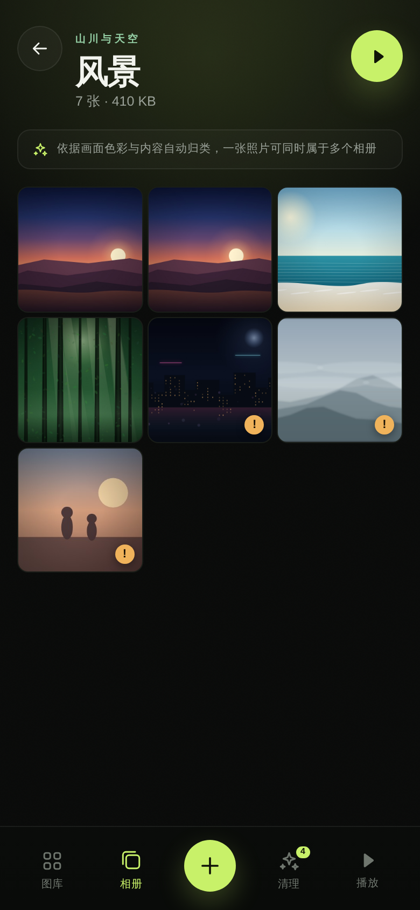
进入相册后可看到该相册的全部照片，页面标注「依据画面色彩与内容自动归类，一张照片可同时属于多个相册」。右上角的播放按钮可直接以当前相册为范围启动幻灯片。
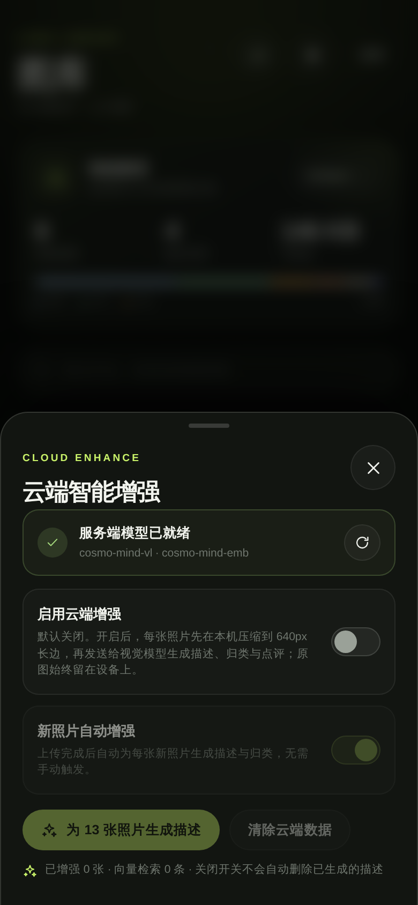
云端面板先做服务状态检测：服务端模型就绪时显示可用模型（本例 cosmo-mind-vl 与 cosmo-mind-emb），未配置时给出填写 .env 的指引。
两个开关的语义清晰分层：启用云端增强决定是否允许照片出设备，新照片自动增强决定是否需要手动触发。开关旁直接写明「每张照片先在本机压缩到 640px 长边，再发送给视觉模型，原图始终留在设备上」。
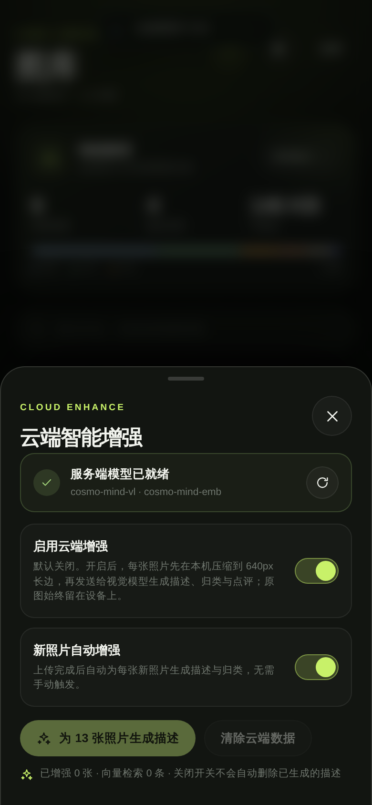
开启后点击增强按钮，按钮进入忙碌状态并显示剩余张数（增强剩余 n 张）。请求按 4 张一批合并发送，兼顾速度与上游调用配额；每张完成后立即写入本地，进度可见、不会因为中途失败而丢失已完成的结果。
演示相册 13 张照片的云端增强耗时约 14.4 秒。
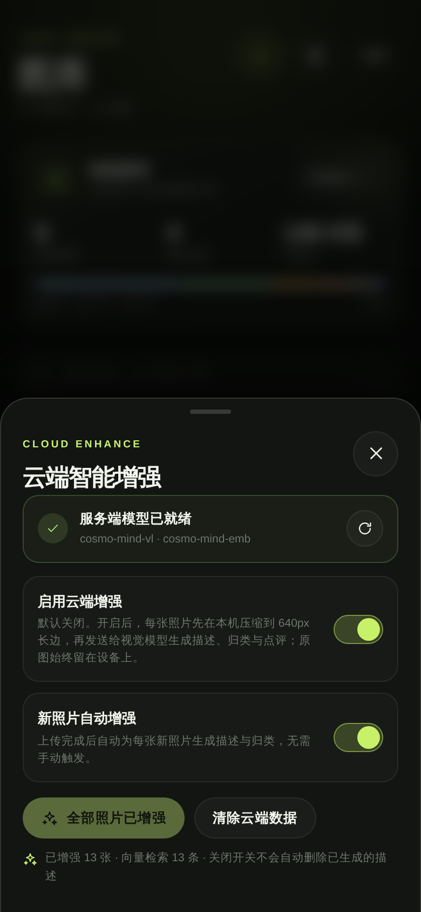
完成后按钮变为「全部照片已增强」，随时可再次打开面板查看状态。增强结果包括：一句中文描述、3 到 5 个中文关键词、AI 归类（含置信度）、一句话画质点评。
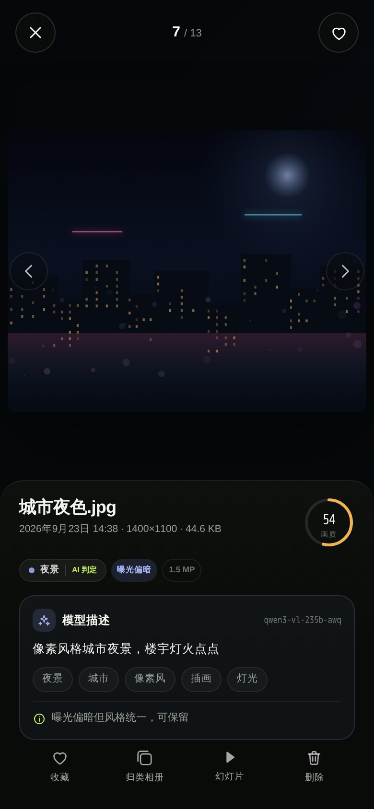
详情页自上而下：大图浏览区、相册标签（带来源标记，如「AI 判定」即由模型判定）、画质分与检测到的问题标签、模型洞察卡、以及收藏 / 归类相册 / 幻灯片 / 删除四个操作。
示例中城市夜色.jpg 得到 54 分画质、标记「曝光偏暗」、归类为夜景，模型点评为「曝光偏暗但风格统一，可保留」。点评聚焦「这张照片是否值得保留」这一决策，与清理流程直接衔接。
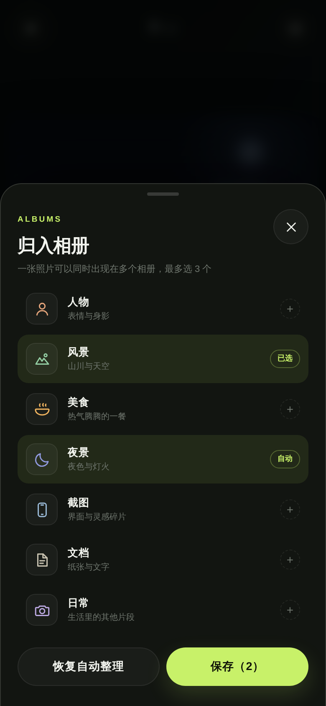
点击「归类相册」打开多选弹层。每行显示相册名、说明与状态标记（自动 / 已选），最多可选 3 个。手动选择会覆盖自动结果，来源标记为「手动」。
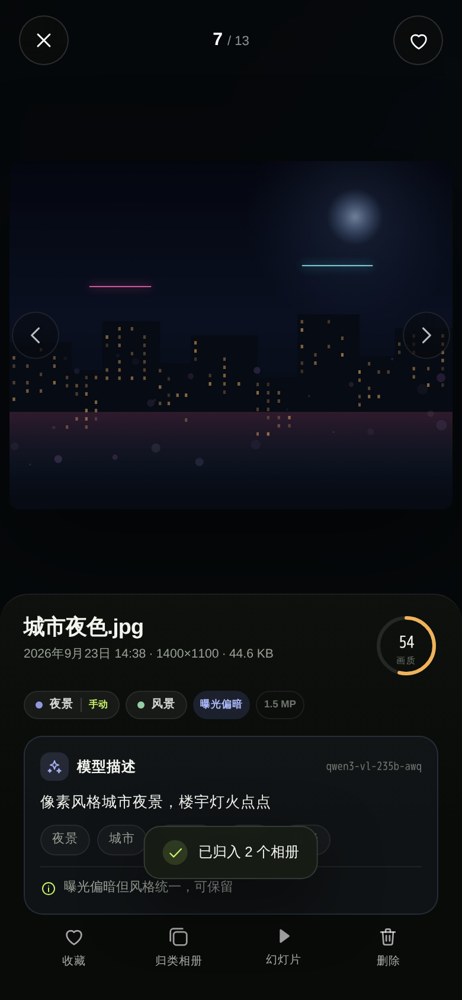
保存后，详情页顶部会同时显示多个相册标签，本张照片因此可同时出现在「夜景」与「风景」两个相册中。标签区提供「恢复自动整理」，一键交还给自动结果。
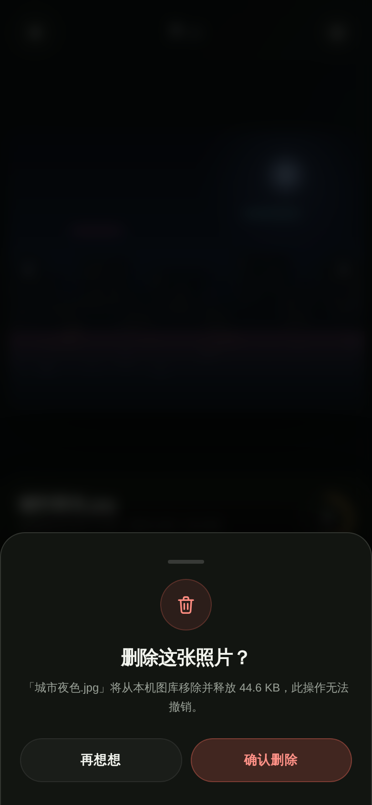
任何删除都经过确认弹层，文案说明影响范围（含释放空间），默认停留等待用户判断，避免误触。
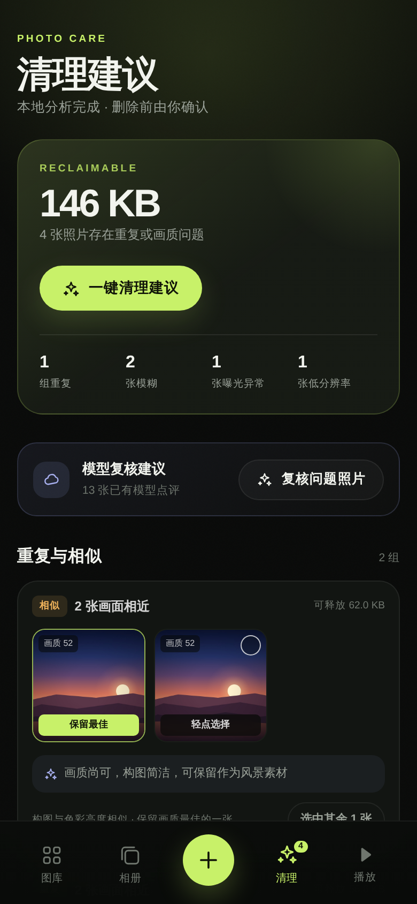
清理页是本产品的核心价值页面：
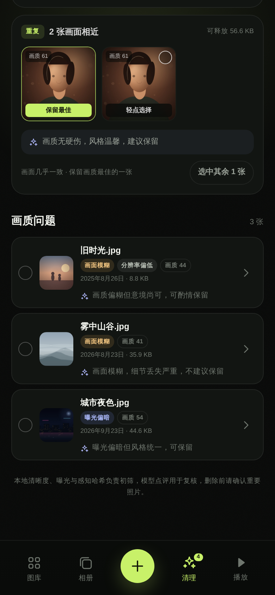
「重复与相似」分组把画面相近的照片并排展示，自动标出「保留最佳」的一张（画质分最高），其余可一键「选中其余 N 张」；每组还附上模型对保留项的点评，帮助用户判断是否值得留。
「画质问题」列表逐张给出原因标签、拍摄信息、画质分与处理建议（例如雾中山谷.jpg「画面模糊严重，细节丢失，不建议保留」）。所有选择汇聚到底部操作条，统一确认后删除。
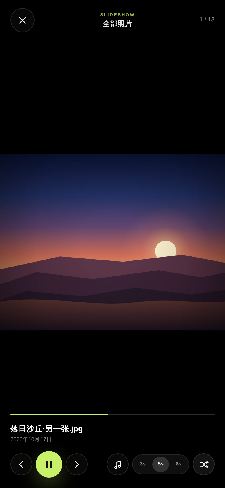
幻灯片支持以全部照片或单个相册为范围播放，提供 3s / 5s / 8s 三档间隔、随机播放、Ken Burns 缓慢推拉动效。顶部显示播放范围（全部照片）与当前序号（1 / 13），底部提供播放控制、随机开关、音乐按钮与进度条。
交互细节：轻点画面隐藏全部控件，获得纯净观赏；左右滑动或方向键切换；Esc 退出；M 键随时开关音乐。
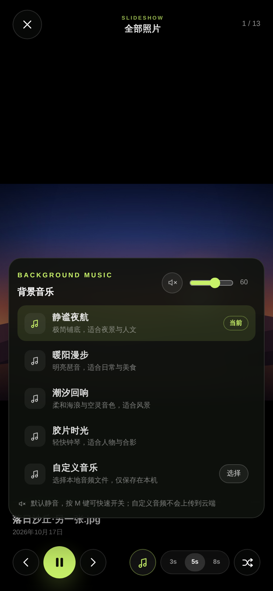
音乐面板列出 4 首内置曲目（静谧夜航、暖阳漫步、潮汐回响、胶片时光），每首标注适用场景；当前曲目标记「当前」。面板顶部是静音按钮与音量滑杆。
内置曲目由 WebAudio 实时合成，不依赖任何音频资源文件，因此首屏体积不受影响。
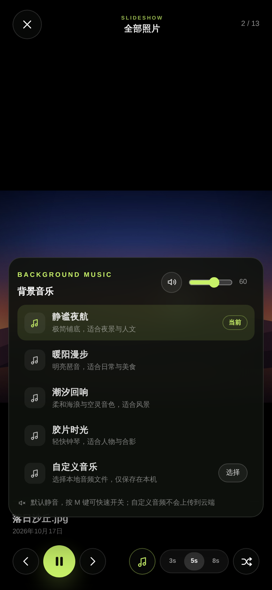
用户可选择本地音频作为自定义背景音乐，文件仅保存在本机 IndexedDB，不会上传到云端；选择后自动切换并显示文件名，可随时移除。音乐默认静音，需用户主动开启。
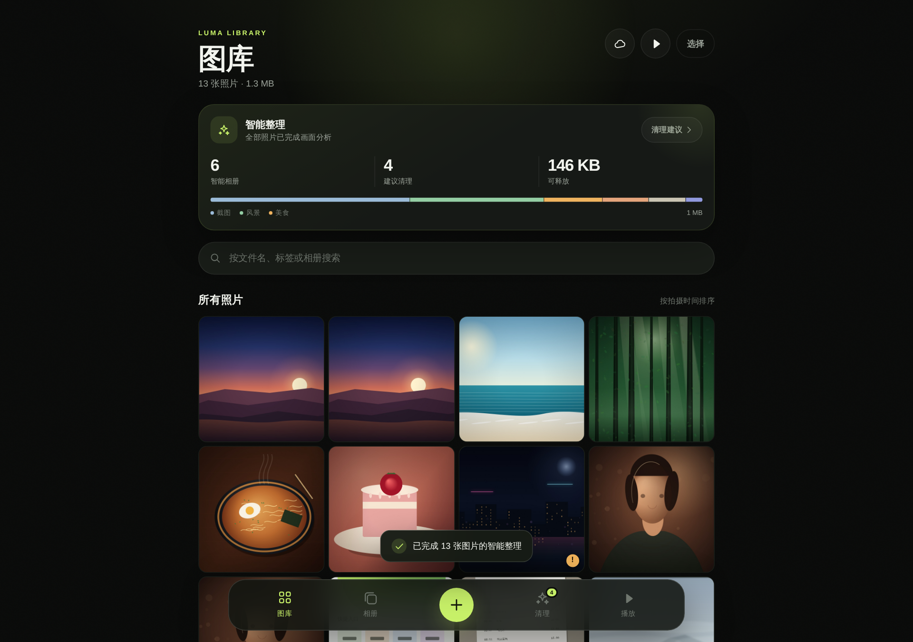
布局随宽度自适应，桌面端自动切换为多列网格并展开侧边信息，手机、平板、桌面共用一套组件。
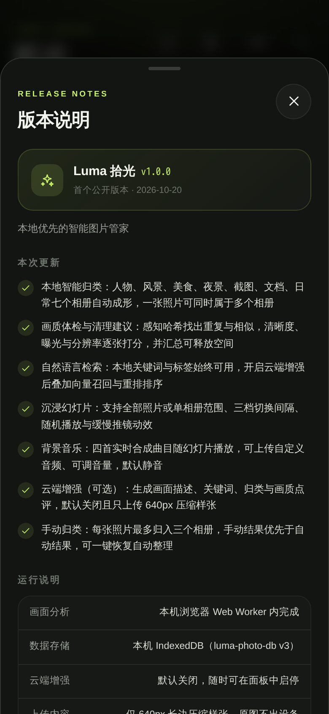
图库页右上角常驻一枚信息图标，采用透明的 34px 圆形按钮与弱化色，排在云端、播放与选择之后，视觉权重最低，不干扰主要操作。
点击后打开版本说明弹层：顶部是版本号与发布日期，中部列出本次更新的功能要点，底部给出四条运行说明（画面分析位置、数据存储、云端默认状态、上传内容）。版本号在构建时从 package.json 注入，因此界面展示的版本与实际发布版本始终一致。
| 模块 | 能力 | 说明 |
|---|---|---|
| 导入 | 点击 / 拖拽批量导入 | 支持 JPG、PNG、WebP、HEIC，读取 EXIF 拍摄时间 |
| 本地分析 | 指纹与画质指标 | 16x16 dHash、8x8x3 分块指纹、十余项画面指标，Web Worker 内完成 |
| 自动归类 | 7 个相册、多标签 | 每类独立打分，主类别取最高分，高分次要类别一并保留 |
| 手动归类 | 多选相册 | 最多 3 个，来源标记「手动」，优先级最高，可恢复自动 |
| 画质评分 | 0-100 分 | 综合清晰度、分辨率、曝光、对比度、饱和度 |
| 问题检测 | 重复、相似与 4 类画质问题 | 重复与相似基于指纹，画质问题含模糊、曝光偏暗、曝光过度、分辨率偏低 |
| 清理 | 分组与清单 | 自动标出保留项、支持整组选中、统一确认后删除 |
| 检索 | 关键词 + 语义 | 本地词法始终可用；云端开启后启用向量与重排融合 |
| 详情 | 大图与洞察 | 相册标签、问题标签、画质分、模型描述、关键词与点评 |
| 幻灯片 | 播放与动效 | 全部 / 单相册范围、三档间隔、随机、Ken Burns |
| 背景音乐 | 内置 + 自定义 | 4 首实时合成曲目，可上传本地音频、调音量、默认静音 |
| 云端增强 | 描述 / 归类 / 点评 | 可选开启，上传 640px 压缩样张，密钥仅存服务端 |
| 版本说明 | 低调入口与弹层 | 图库右上角信息图标，展示版本号、发布日期、更新要点与运行说明 |
luma-photo-db）。本地归类（演示相册 13 张，主类别与配置一致，6 张获得多标签）：
| 照片 | 主类别 | 置信度 | 相册 |
|---|---|---|---|
| 城市夜色.jpg | 夜景 | 0.96 | 夜景、风景 |
| 深夜拉面.jpg | 美食 | 0.97 | 美食、夜景 |
| 购物小票.jpg | 文档 | 0.97 | 文档 |
| 手机截图.png | 截图 | 0.97 | 截图 |
| 逆光肖像.jpg | 人物 | 0.93 | 人物 |
| 雾中山谷.jpg | 风景 | 0.81 | 风景 |
| 落日沙丘.jpg | 风景 | 0.87 | 风景、夜景 |
| 森林光束.jpg | 风景 | 0.97 | 风景 |
| 海岸线.jpg | 风景 | 0.97 | 风景 |
| 草莓蛋糕.jpg | 美食 | 0.97 | 美食 |
| 旧时光.jpg | 人物 | 0.97 | 人物 |
检索（云端增强后实测）：
| 查询 | 结果 |
|---|---|
| 城市夜晚的灯光 | 命中 城市夜色.jpg |
| 纸质凭证 | 命中 购物小票.jpg |
| 落日 | 命中两张落日沙丘 |
| 蛋糕 | 命中 草莓蛋糕.jpg |
| 宇宙飞船 | 0 张，给出无匹配引导 |
性能（演示相册 13 张）：本地分析约 4.5 秒，云端增强约 14.4 秒。
清理（演示数据）：预计可释放 146 KB，2 组相近照片（1 组重复、1 组相似），3 张画质问题照片。